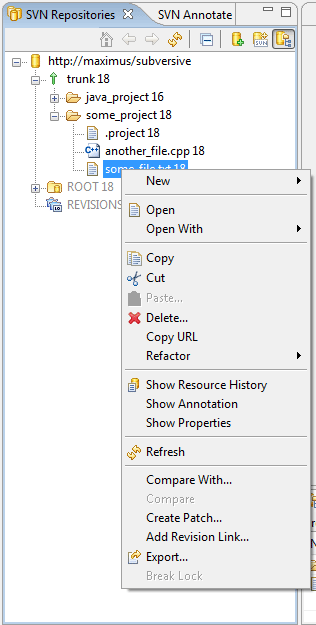

|
|
|
 'SVN Repository View' is a part of 'SVN Repository Exploring' perspective. It shows SVN Repositories associated with your Workbench. If the user expands the location item the trunk, project revisions, tags and branches are shown which also are expandable, showing the files and folders of shared project contained in them.
'SVN Repository View' is a part of 'SVN Repository Exploring' perspective. It shows SVN Repositories associated with your Workbench. If the user expands the location item the trunk, project revisions, tags and branches are shown which also are expandable, showing the files and folders of shared project contained in them.
The pop-up menu allows the user to create new repository locations, resources, tags, branches and project structures, check out projects and resources, show resource history and SVN® properties, add revision links, do compare, get location properties and discard repository location.
This is how 'SVN Repository View' looks like:
Toolbar
Home - redraws the view showing the repository locations as roots.
Back - redraws the view showing the previous roots.
Go Into - redraws the view showing the children of selected root.
Refresh - redraws the view refreshing the content.
Collapse All - redraws the view collapsing all expanded items.
New repository location - activates a New Repository Location Wizard.
New repository - activates a Create Repository dialog.
Show repository browser - shows Repository Browser View.
Pop-up menu
New>Repository Location - activates a New Repository Location Wizard.
New>Repository - activates a Create Repository Dialog.
New>File - creates a new file in the repository location.
New>Folder - creates a new folder in the repository location.
New>Tag - creates a new tag in the specified location.
New>Branch - creates a new branch in the specified location.
New>Project Structure - creates a new project structure with its own trunk, branches and tags in a specified location.
Check Out - check out selected resource to a current workspace.
Find/Check Out As - activates SVN Find/Check Out As Wizard.
Show Resource History - shows SVN History View for a selected resource.
Show Properties - shows SVN® Properties View for a selected resource.
Refresh - refreshes the current folder contents.
Compare - compares two selected resources.
Compare with... - compares the selected folder with a branch or revision of the same folder.
Create Patch... - creates a patch from a selected resource in compare with another URL or revision.
Add Revision Link... - creates a revision link and adds it to a revisions folder.
Export... - exports a selected resource to a local folder.
Import... - imports a resource from a local folder.
Locations properties... (repository locations only) - provides a probability to view and set repository location properties (same as in SVN Repository Location Wizard).
Discard location... (repository locations only) - discards the selected repository location.